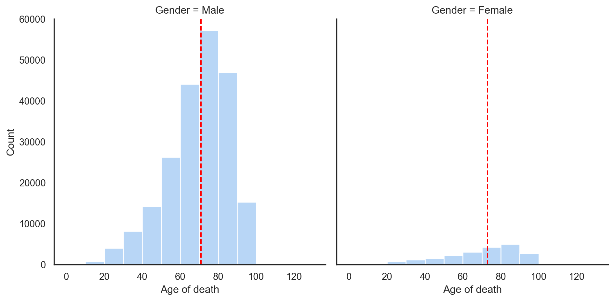
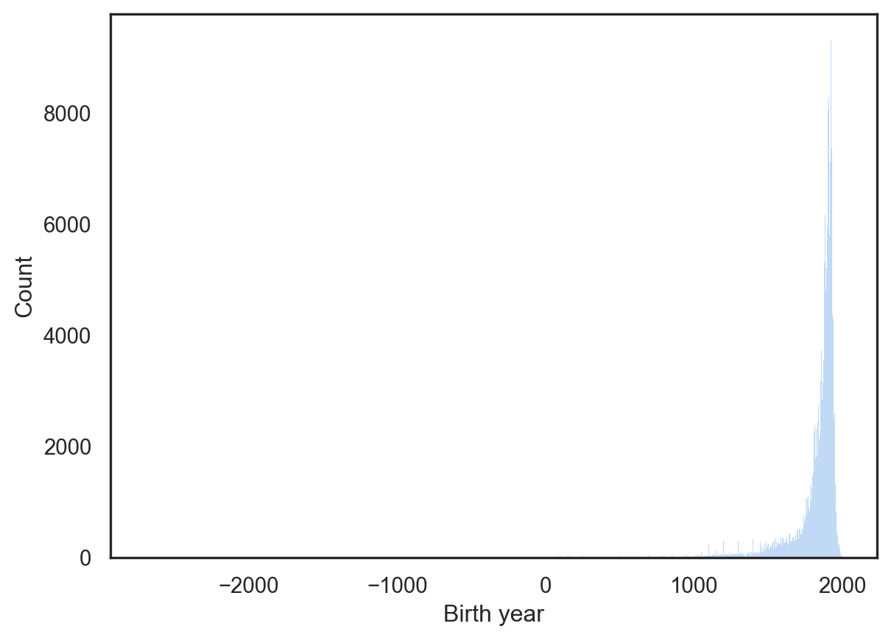
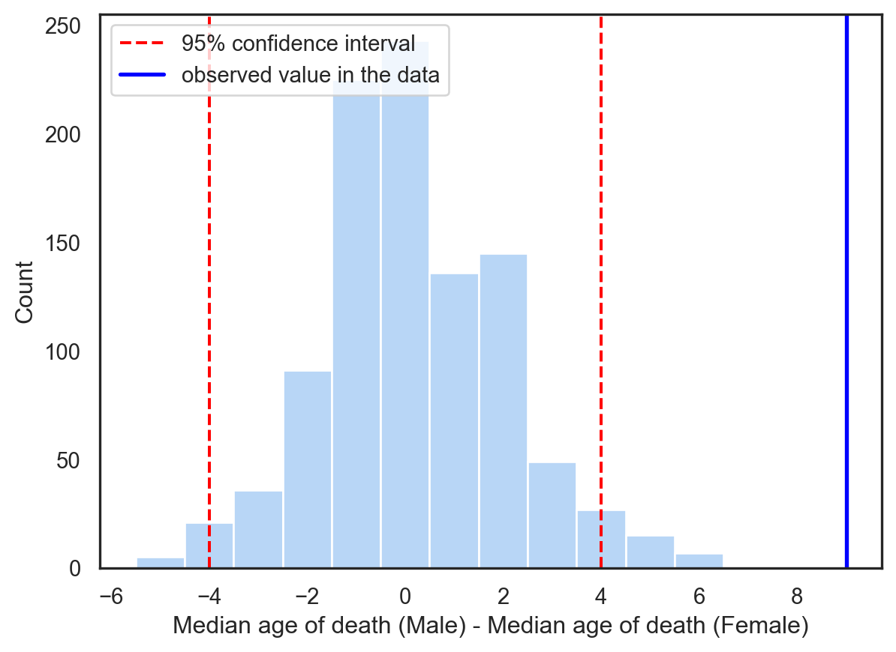

If you want to compare median value of two different groups in a training dataset, which statistical test will you use? If you do not know the answer, permutation test will come in handy.
Permutation is a technique in statistics that allows you to perform hypothesis testing using any measurement of interest. The steps are as follows:
Calculate the statistic of interest on the given training data.
Assume that there is no difference between two groups in your training data and shuffle the data.
Re-calculate the statistic of interest on the shuffled data.
Repeat steps 2 and 3 many times.
Calculate how often the statistic of interest in the distribution has a value more extreme than the value calculated on the original training data. This fraction gives the p-value of the statistic of interest and allows you to draw a conclusion whether the difference observed in the two groups is statistically significant or not.
The permuation algorithm is generic and can be used for any measurement. The idea is to compare an effect observed in the training data with a distribution generated by assuming that there is no effect in the data and calculate a p-value to determine the statistical significance of the effect. The permutation test does not involve making any assumptions about the distribution, and can therefore be used for quantities such as median and mode, for which no standard statistical tests exist.
Let’s look at an example of how to perform permutation test.
Get the data
In this example, we are going to use an Age Dataset1. This dataset contains the details of work, life and death of historical individuals. The data is avialable publicly on github.
import matplotlib.pyplot as pltimport numpy as npimport pandas as pdimport seaborn as snssns.set_theme(style ="white", palette ="pastel")# Download the csv file from the github repositoryage1 = pd.read_csv("https://raw.githubusercontent.com/Moradnejad/AgeDataset/refs/heads/main/AgeDataset-V1-Part1.csv", header =0, delimiter =",")age1.head()
Id
Name
Short description
Gender
Country
Occupation
Birth year
Death year
Manner of death
Age of death
0
Q23
George Washington
1st president of the United States (1732–1799)
Male
United States of America; Kingdom of Great Bri...
Politician
1732
1799.0
natural causes
67.0
1
Q42
Douglas Adams
English writer and humorist
Male
United Kingdom
Artist
1952
2001.0
natural causes
49.0
2
Q91
Abraham Lincoln
16th president of the United States (1809-1865)
Male
United States of America
Politician
1809
1865.0
homicide
56.0
3
Q254
Wolfgang Amadeus Mozart
Austrian composer of the Classical period
Male
Archduchy of Austria; Archbishopric of Salzburg
Artist
1756
1791.0
NaN
35.0
4
Q255
Ludwig van Beethoven
German classical and romantic composer
Male
Holy Roman Empire; Austrian Empire
Artist
1770
1827.0
NaN
57.0
The data consist of 10 columns, including Gender, Birth year, and Age of death. We will use permutation to examine if there is a difference in the Age of Death of Females versus males.
Explore the data
Let’s look at the values available in the Gender column.
age1["Gender"].value_counts()
Gender
Male 217216
Female 21054
Transgender Female 15
Eunuch; Male 12
Transgender Male 8
Intersex 4
Eunuch 2
Transgender Person; Intersex; Transgender Male 1
Non-Binary 1
Intersex; Male 1
Transgender Female; Female 1
Transgender Female; Male 1
Female; Male 1
Name: count, dtype: int64
The Gender columns contains many other values apart from Male and Female. We will discard those values going forward. We are also going to plot the data for distribution of Age of death for both genders.
age1 = age1[age1["Gender"].isin(["Male", "Female"])]ax = sns.displot(data = age1, x ="Age of death", col ="Gender", binwidth =10)#age1.hist(column = "Age of death", by = "Gender")male_median_age = age1[age1["Gender"] =="Male"]["Age of death"].median()female_median_age = age1[age1["Gender"] =="Female"]["Age of death"].median()ax.facet_axis(0,0).axvline(x = male_median_age, c ="red", ls ="--", label ="Median Age")ax.facet_axis(0,1).axvline(x = female_median_age, c ="red", ls ="--")print(f"Male median age is {male_median_age}")print(f"Female median age is {female_median_age}")
Male median age is 71.0
Female median age is 73.0

Figure 1: Distribution of Age of death for males and females in the whole dataset. The median Age of death is marked by the dashed red line.
We see from Figure 1 that in the full dataset, there is not much difference in the Age of death between the genders. We can also see that there are significantly less Females in the data than Males.
With the above observations, let’s look at the distribution of birth years in the data.
sns.histplot(age1["Birth year"])

Figure 2
Figure 2 shows that a majority of the data are for people born after the year 1000. We can take a look at the Age of death of both genders across centuries and ask if there is any difference across centuries.
In order to do the above, we need to create a new column called century, which will include all people born in each century after the year 1000.
Look at the number of people born in each century after the year 1000
# Create a new column called Centurycenturies = np.arange(1000, 2100, 100)df = age1.copy()for century in centuries:if century >=2000: label =f"{int(century/100) +1}st century"else: label =f"{int(century/100) +1}th century" df.loc[(df["Birth year"] >= century) & (df["Birth year"] < century+100), "century"] = labeldf["century"].value_counts()
century
20th century 93651
19th century 90686
18th century 22699
17th century 9894
16th century 7491
15th century 4135
14th century 2129
13th century 1843
12th century 1488
11th century 983
21st century 37
Name: count, dtype: int64
We can now look to see if there is a difference in Age of death between genders across different centuries.
Look at the median difference between genders across centuries
df[["Gender", "century", "Age of death"]].groupby(["century", "Gender"])["Age of death"].median()
century Gender
11th century Female 51.0
Male 56.0
12th century Female 50.5
Male 56.0
13th century Female 47.0
Male 56.0
14th century Female 46.0
Male 57.0
15th century Female 51.0
Male 60.0
16th century Female 55.0
Male 60.0
17th century Female 59.0
Male 64.0
18th century Female 64.0
Male 69.0
19th century Female 76.0
Male 72.0
20th century Female 78.0
Male 76.0
21st century Female 18.0
Male 17.0
Name: Age of death, dtype: float64
We can see that there are differences in median value of Age of death between the genders across centuries.
Look at the total individuals in the data split by gender across centuries
df[["Gender", "century", "Age of death"]].groupby(["century"])["Gender"].value_counts()
century Gender
11th century Male 864
Female 119
12th century Male 1300
Female 188
13th century Male 1566
Female 277
14th century Male 1828
Female 301
15th century Male 3743
Female 392
16th century Male 6912
Female 579
17th century Male 9186
Female 708
18th century Male 21406
Female 1293
19th century Male 84258
Female 6428
20th century Male 83259
Female 10392
21st century Male 28
Female 9
Name: count, dtype: int64
For the permutation test, we will pick a century and test if the median difference in Age of Death between genders is statistically significant or not. We can pick data from any century, but for the following analysis, we will focus on the 13th century.
Select a subset of the data for individuals born in the 13th century
# Get the dataframe for the thirteenth centurydf_thirteen = df[df["century"] =="13th century"][["century", "Gender", "Age of death"]].copy().reset_index(drop =True)# Drop the century column after checking that we have the right dataframedf_thirteen.drop(columns=["century"], inplace =True)df_thirteen.head()
Gender
Age of death
0
Male
56.0
1
Male
56.0
2
Male
48.0
3
Female
36.0
4
Male
33.0
Perform permuation testing to see if the observed difference in median value of Age of death between genders is statistically significant or not.
Now that we have our dataset, we will: - calculate the observed difference in median value of Age of death between the genders. - shuffle the values of Age of death to create new datasets. Each new dataset will simulate that the gender labels could have been completely by chance and there is no effect of gender. - Create a distribution for difference in median of Age of death between genders for all iterations of the shuffled datasets. - Calculate how many times a value more extreme than the observed value of Age of death occurs in the distribution.
Calculate the difference between median Age of death of genders in the data
# Define a function to calculate the statistic of interestdef calculate_median_diff_genders(df): median_diff_genders = (df[df["Gender"]=="Male"]["Age of death"].median()) - (df[df["Gender"]=="Female"]["Age of death"].median())return median_diff_gendersobserved_median_diff_genders = calculate_median_diff_genders(df_thirteen)observed_median_diff_genders
np.float64(9.0)
Shuffle the data 1000 times and create a distribution of difference between median Age of death of genders
n =1000median_diff_genders_distribution = np.zeros(n)for i inrange(n): shuffled_age = df_thirteen["Age of death"].sample(df_thirteen.shape[0], replace =False).reset_index(drop =True) df_shuffled = pd.DataFrame({"Gender": df_thirteen["Gender"], "Age of death": shuffled_age}) median_diff_genders_distribution[i] = calculate_median_diff_genders(df_shuffled)
Calculate 95% confidence intervals for observing the effect of gender of difference in median value of Age of death.
Plot the observed statistic with the obtained distribution and 95% confidence intervals
sns.histplot(median_diff_genders_distribution, discrete =True)plt.axvline(x = left_value, c ="red", ls ="--", label ="95% confidence interval")plt.axvline(x = right_value, c ="red", ls ="--")plt. axvline(x = observed_median_diff_genders, c ="blue", lw =2, label ="observed value in the data")plt.legend(loc ="upper left")plt.xlabel("Median age of death (Male) - Median age of death (Female)")
Text(0.5, 0, 'Median age of death (Male) - Median age of death (Female)')
(a) Comparison of observed statistic with distribution generated under null hypothesis. The left and right limits for 95% confidence interval are marked as dashed red lines. The actual value of the statistic (difference in median value of Age of death between males and females is marked by the solid black line.)

(b)
Figure 3
Conclusion
We can see from Figure 3 that under null hypothesis, i.e., assuming that there is no impact of gender on Age of death of an individual in the thirteenth century, we do not observe any value as extreme as the value obtained for the data we have. Therefore, we can reject the null hypothesis and conclude that there is a statistically significant effect of gender on the Age of death of an individual in the thirteenth century.
The permuation algorithm is generic and can be used for any measurement. The idea is to compare an effect observed in the training data with a distribution generated by assuming that there is no effect in the data and calculate a p-value to determine the statistical significance of the effect. The permutation test does not involve making any assumptions about the distribution, and can therefore be used for quantities such as median and mode, for which no standard statistical tests exist.
Amoradnejad, Issa; Amoradnejad, Rahimberdi; et al. (2022). “Age dataset: A structured general-purpose dataset on life, work, and death of 1.22 million distinguished people”. Workshop Proceedings of the 16th International AAAI Conference on Web and Social Media (ICWSM). 3. ICWSM: 1–4. doi:10.36190/2022.82.↩︎